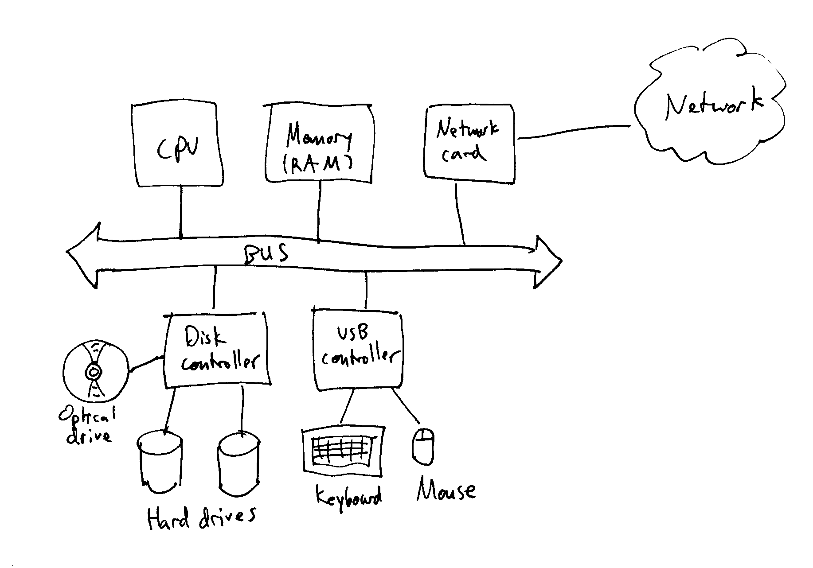
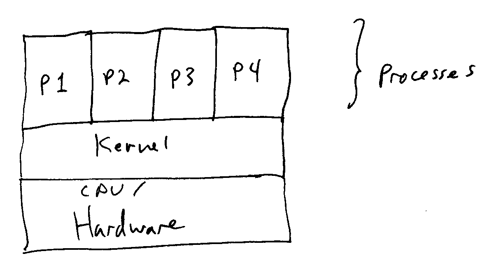
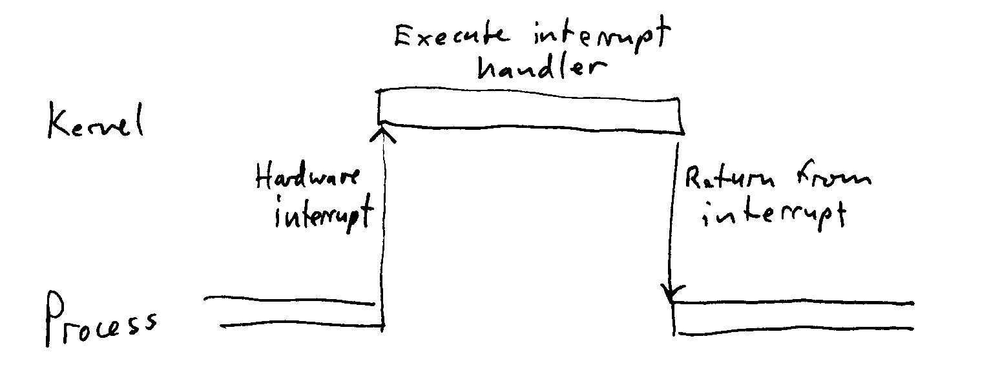
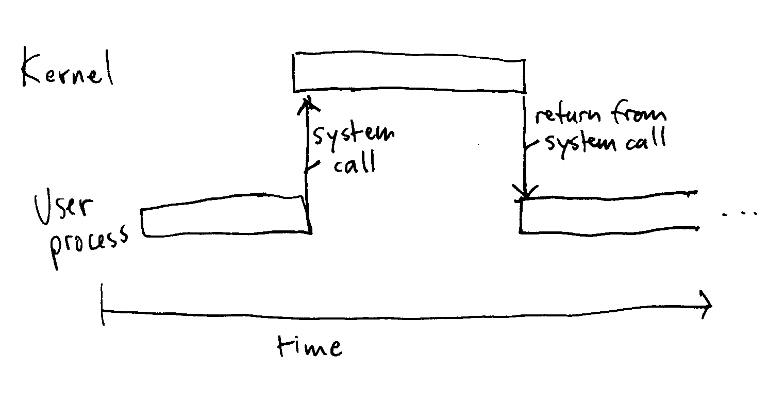
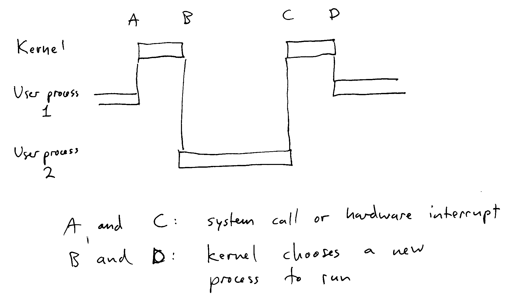

Introduce myself. Email/office/office hours etc.
What is an operating system? Question: why not just run
programs directly on the hardware? [In the early days of
programming, this is how computers were programmed. Even today,
some embedded systems run directly on the hardware, without an
operating system.] Discuss.
General theme: an operating system virtualizes
the resources of a single computer. Each process (a running
program) is given the illusion that it has exclusive access to a
virtual computer with virtual CPU (s), memory, I/O devices, etc.
Goal for the course: understand the algorithms and implementation
techniques used in modern O.S. kernels. Gain direct experience by
implementing them in a real operating system kernel.
Outline of the course:
Computer organization:
Diagram of PC. Show CPU, memory, disk controller/disks, video
card/monitor, usb controller & mouse/keyboard, network card

When a PC starts:
Even when the initial user space programs are running, the OS kernel
is still resident.
Important terminology:
These terms refer to the kernel's code and data (kernel space) and
the code and data of ordinary programs (user space).
When the computer is executing kernel code in "kernel space", it is
said to be in "supervisor mode" or "kernel mode". This is a
special hardware mode that allows the kernel code unlimited access to
CPU, memory, and hardware resources. Examples of things kernel
code can do:

Important distinction: "OS kernel" vs. "Operating System". The
'kernel" is the only program that runs directly on the hardware.
Processes run under the supervision of the kernel. Various
utility programs, the window system, libraries, etc. are generally not
part of the kernel. (But there are always exceptions: some OSes,
such as Windows XP, build the window system directly into the
kernel.)
The overall term "operating system" generally refers to the kernel and
all of the "system-level" programs and utilities. In this course,
we are mainly interested in the kernel proper, although we will talk a
little bit about other parts of the OS.
Important questions:
Take these one at a time. Ask for ideas how these functions
work.
Input from I/O device: interrupts.
When a device (such as USB controller, disk controller, network card,
etc.) has input data available it interrupts the CPU. The
interrupt transfers control to a kernel interrupt handler, suspending
whatever code was executing at the time of the interrupt. The
interrupt handler arranges for the data to be transferred from the
device to a kernel data structure (or possibly user memory). When
the interrupt handler it completes, it may return to the interrupted
process, or a completely different process.

Running multiple processes at the same time: the timer interrupt. When a timer
interrupt occurs, the kernel can choose to suspend the current process
and choose a new process to run. As long as the time slices are
short and the kernel uses a "fair" policy to determine how frequently a
process gets a time slice, this creates the illusion of many processes
running at the same time. Term for multiple tasks running at the
same time: concurrency.
Memory protection: many memory protection schemes are possible.
Paging/virtual memory makes lots of very cool OS features
possible. Will discuss more later.
Preventing a user process from directly accessing hardware devices:
kernel runs in "kernel mode" where it can do anything (including direct
access to hardware devices). User processes run in "user
mode". The kernel configures user mode to disallow direct access
to hardware devices.
Requesting a service requiring hardware access: for example, say the
process wants to write some data to a file. It cannot directly
communicate with the disk controller (not possible in user mode).
Instead, it issues a system call
to the kernel requesting that some data be transferred from the
process's memory to a file on disk. A system call is a controlled
transfer of control from a user process to the kernel.

System calls are also known as software
interrupts. They work almost exactly the same way as a
hardware interrupt.
After handling a hardware or software interrupt, the kernel is free
to select any process to run, not necessarily the process that was
running when the interrupt occurred. This is known as preemption:

Lab exercise: download geekos, compile, run in bochs. If the
software is set up and working. Otherwise, demonstrate on my
laptop.